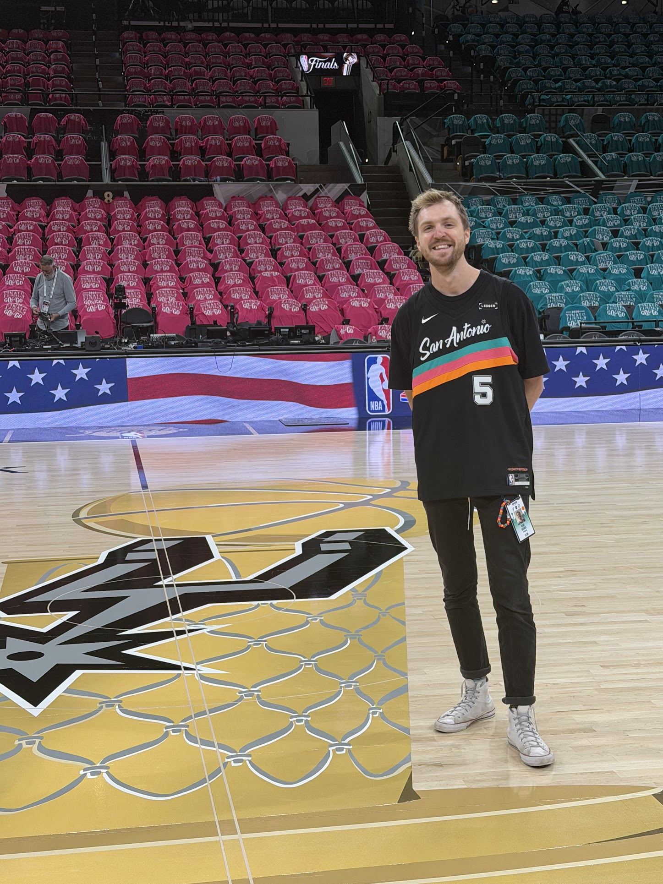

YouTube & social growth studio
Antisocial
people.
Very social
results.
Strategy, creative, and channel operations for athletes, entertainers, and brands. We build the stuff people actually watch.
The name is a joke. We’re actually pretty social.

Real-world impact.
FROM THE ASFC ARCHIVE
A lot of people.
A lot of play buttons.
Good creative.
Something to show for it.
A few familiar faces. Some very good numbers. Open a client story for the work behind them.
A strategy.
The team to deliver it.
Bring us in for the whole show, or the support your team needs. Every engagement connects the plan to the work.
All-in consulting
Your strategy, YouTube and social strategist, channel manager, thumbnail designers, vertical editors, and hero video editor. One team supporting ideation, post-production, and distribution.
Embedded strategist
A strategist in your channel and team chat. Weekly meetings, monthly analytics, and hands-on ownership of setup, uploads, and distribution.
Vertical video team
Usually two editors, with a fixed monthly output agreed around your show. Available across one or multiple projects.
Channel audit
A deep look at your channel’s data, gaps, growth opportunities, and competitors. A focused plan, with two follow-ups to review findings and track progress.
Channel management, thumbnail design, and editing can also be scoped individually.
Big personalities.
Ambitious organizations.
From a first format to a full media operation, we plug in where your team needs us.
Athletes & entertainers
Turn the personality people already love on TV into something they watch all year. Build an audience that follows you beyond the game, stage, or screen.
Teams & leagues
You have the access, the moments, and the fans. We help your content team connect game-day coverage, original series, and the offseason into one operation that dramatically increases reach, revenue, and inventory.
Podcasts & shows
A proven and repeatable growth strategy to make every conversation travel further. Give full episodes, clips, and Shorts a clear role, with packaging that helps new viewers find their next favorite show.
Creators & personal brands
You bring the voice. We build the team and systems around it, so you can keep creating while your channel grows beyond what one person can manage.
Networks & publishers
Connect multiple shows, channels, and teams without losing what makes each one work. Shared workflows and useful reporting turn a content portfolio into a coordinated operation.
Brands with a point of view
Build a channel people choose to watch. Turn your expertise, access, and perspective into recurring formats that earn attention and give your audience a reason to return.
Antisocial by design.
Because the spotlight belongs on you, we build strategy, systems, and execution that make your channel the one that everyone talks about.
We’re Antisocial Friends Club: strategists, creatives, and operators founded by Kent Heckel, with an ear to the ground and a slightly unreasonable obsession with what people watch.
We’re in the feeds, in the analytics, and in the conversations with creators and platforms. Part mad scientists, part extension of your team. We test new formats, spot shifts early, and bring what we learn straight into your next upload.

Your people are out there.
Let's give them a reason
to watch.
Tell us what you're building. We'll start there.